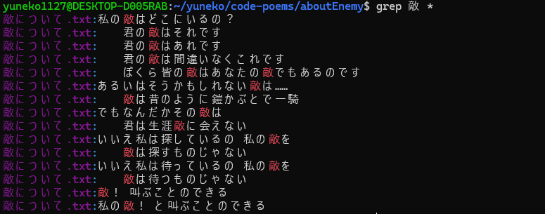

不合なし不合付き
unsignd int cisgender_person;
signd int transgender_person;敵について

binary_search.c
#define N 100 // データ数
// In computer
int binary_search(int *data, int key){
int pl, pr, pc;
pl = 0;
pr = N-1;
do{
pc = (pl+pr)/2;
if(data[pc] == key){
return pc;
} else if(data[pc] < key){
pl = pc + 1;
} else{
pr = pc - 1;
}
}while(pl <= pr);
return -1;
}
// In society
void binary_search(Person *people){
int i;
for(i=0; i<N; i++){
if(people[i].appearance == 'M'){
people[i].gender = 'M';
} else if(people[i].appearance == 'F'){
people[i].gender = 'F';
}
}
return;
}生存は抵抗.c
int main(void) {
while(Me == survival){
resist(society);
}
return 0;
} pray.c
int main(void){
while(1){
pray for *;
}
return 0;
} typedef_gender.c
#include<stdio.h>
// Some people
typedef struct{
char family_name[100];
char last_name[100];
int birth_year;
int birth_month;
int birth_date;
} Male;
typedef struct{
char family_name[100];
char last_name[100];
int birth_year;
int birth_month;
int birth_date;
} Female;
// Family register in Japan(戸籍)
typedef struct{
char family_name[100];
char last_name[100];
int birth_year;
int birth_month;
int birth_date;
char sex;
} Person_in_law;
// My ally friends
typedef struct{
char family_name[100];
char last_name[100];
int birth_year;
int birth_month;
int birth_date;
char gender[100];
} Person_by_friends;
// Me
typedef struct{
char family_name[100];
char last_name[100];
int birth_year;
int birth_month;
int birth_date;
} Person_by_me;
int main(void){
Female Yuneko_by_someone = {"???", "??????", 2004, 11, 27};
Person_in_law Yuneko_in_law = {"???", "??????", 2004, 11, 27, 'F'};
Person_by_friends Yuneko_by_ally = {"???", "??????", 2004, 11, 27, "Nonbinary"};
Person_by_me Yuneko_by_me = {"???", "??????", 2004, 11, 27};
return 0;
}特例法.c
#include<stdio.h>
#include<stdbool.h>
bool 特例法(void);
int main(void){
bool gate;
gate = 特例法();
if(gate == true){
printf("家庭裁判所の審査を経て、戸籍上の性別を変更できる");
} else {
printf("戸籍上の性別を変更できない");
}
return 0;
}
bool 特例法(void){
bool gate = false;
char diagnosis, child, reproduction, appearance;
int age;
printf("2人以上の医師から性同一性障害の診断を受けている(Y or N):");
scanf("%c", &diagnosis);
printf("あなたの年齢:");
scanf("%d", &age);
// 2008年の改正を受けて
// printf("子がいる(Y or N):");
printf("未成年の子がいる(Y or N):");
scanf("%c", &child);
// 2023/10/25 最高裁判所の違憲判断を受けて
// printf("生殖腺や生殖機能がある(Y or N):");
// scanf("%c", &reproduction");
printf("変更後の性別の性器に似た外見を備えている(Y or N):");
scanf("%c, &appearance);
if(diagnosis == 'Y' && age >= 18 && child == 'N' /*&& reproduction == 'N'*/ && appearance == 'Y'){
gate = true;
}
return gate;
}not_a_phase.c
#include<stdio.h>
#include<stdbool.h>
#include<unistd.h>
int main(void){
char your_sexuality[100];
int day = 0;
bool all_sexuality = true;
bool sexuality_change = false;
printf("Enter your sexuality:");
scanf("%s", your_sexuality);
while(all_sexuality == true){
if(sexuality_change == true){
break;
} else if(day == 0){
printf("You are %s.\n", your_sexuality);
} else if(day == 1){
printf("You are %s after %d day. It's not a phase.\n", your_sexuality, day);
} else {
printf("You are still %s after %d days. It's not a phase.\n", your_sexuality, day);
}
sleep(1);
day++;
}
return 0;
}gender_assignment.c
#include<stdio.h>
int main(void){
char gender[100];
printf("Enter your gender:");
scanf("%s", gender);
if(gender == assigned at birth){
printf("Error: invalid assignment.\n");
} else if(gender == assigned by yourself){
printf("Success: valid assignment.\n");
}
return 0;
}your_gender_volid.py
gender = input("Enter your gender: ").lower()
if gender in ["male", "female"]:
print("As everyone says, you are valid.")
else:
print("Whatever anyone says, you are valid.")introduction.c
#include <stdio.h>
int main() {
char name[];
char pronouns[];
printf("Enter your name:");
scanf("%s", name);
printf("Enter your pronouns (e.g.:they/them, she/her, he/him):");
scanf("%s", pronouns);
printf("Hello World! I'm %s and I use %s pronouns.\n", name, pronouns);
return 0;
}